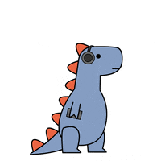

Lab 4 - Pseudocoding & Problem-Solving

Challenge
Create pseudocode for javascript and breaking down easy tasks into pseudocode.
Problems
It was difficult breaking down the code for a simple game, since it felt like we were missing a step. Or if we were splitting the tasks correctly.
Results
How to make horchata:
//Search up recipe online/book
//Look if you have appliances needed, if not purchase or make do with what’s available
//Look at ingredients, purchase ingredients and gather ingredients into the kitchen
//Use a blender
//Combine rice, hot water, and cinnamon sticks into a blender
//Blend until rice/cinnamon sticks are ground
//Refrigerate overnight, at least 8 hours
//Strain mixture into a mesh strainer over a pitcher
//Throw away rice left on strainer
//Stir milk, vanilla, cinnamon, and sugar into pitcher
//Add ice to your preference
//Enjoy!
Pong Arcade Game:
//Create a board with a vertical dotted line
split in the middle of board
//Create a numerical counter (points) on top
of board starting at 0 in the
middle of the two sections with counter staying
in an 8 X 5 pixel space
//Create first player on the right side of dotted
line (3 pixel tall and 1 pixel long)
//Create second player on the left side of dotted
line (3 pixel tall and 1 pixel long)
//Create 1 pixel at the top of dotted line
//Pixel can move along the x and y axis
//Allow single pixel to move randomly
(either to the left or right of dotted line)
//Allow both players to move up and down on the y axis
//Players can hit the pixel
//When pixel is hit by the player of the
accompanying numerical
counter on the same side, the counter goes
up by one number
//When a single player hits pixel, allow it to
move to the other side
of the dotted line
//When the pixel crosses the dotted line again,
the other player can send
pixel back across the dotted line
//Each time pixel crosses the dotted line, allow
the pixel to increase its velocity
//Continue this pattern until one player reaches 11
on the counter (points)
or pixel passes a player and goes off screen
//Counter starts back on 0 and game restarts pattern